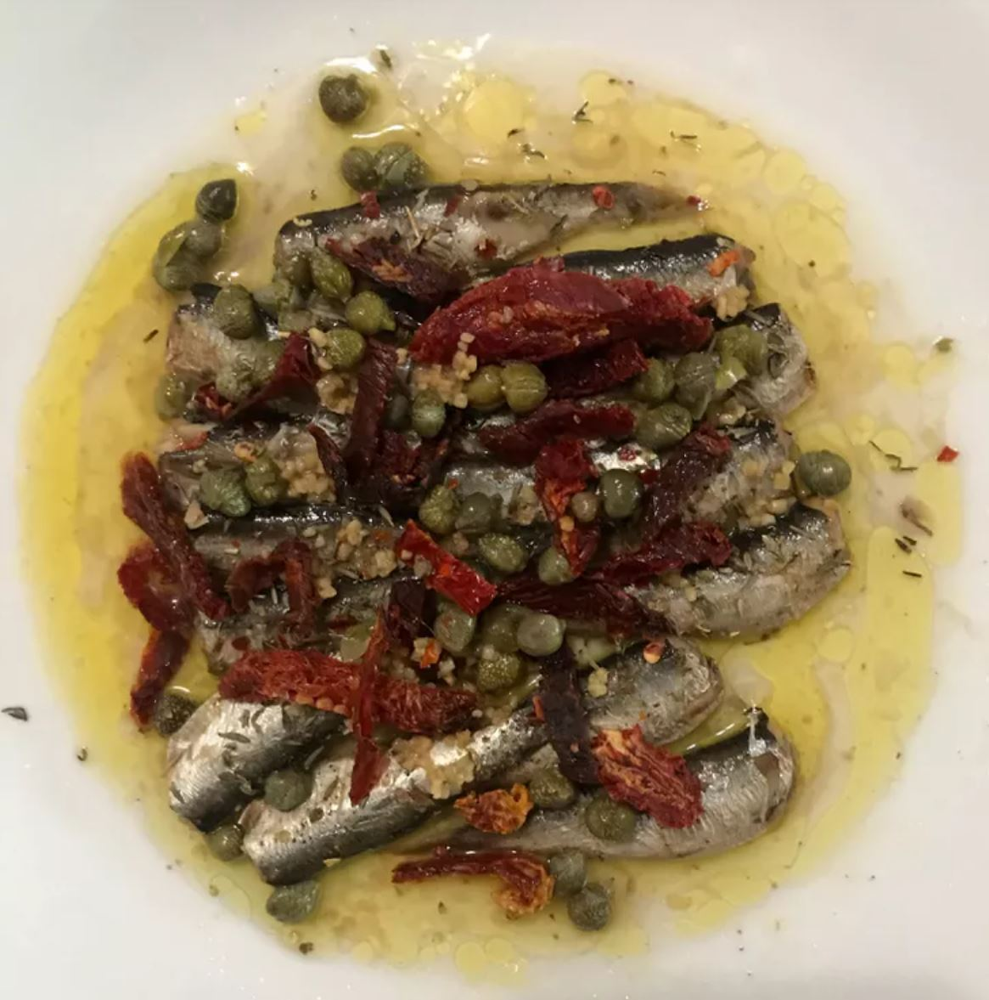

Sardines with Sun-Dried Tomato and Capers

Description
This is a high protein vegan stir fry tofu entree with peanut sauce.
Ingredients
- 1 (3.75 ounce) can sardines packed in olive oil, drained (such as King Oscar®)
- ½ fresh lemon
- 1 pinch salt and ground black pepper to taste
- ¼ teaspoon cayenne pepper
- ½ teaspoon dried oregano
- ½ teaspoon dried thyme
- 1 pinch crushed red pepper flakes, or to taste
- 2 garlic cloves, chopped
- 2 tablespoons chopped sun-dried tomatoes
- 1 tablespoon capers
Steps
- Place the sardines on a small plate. Squeeze the lemon half over the sardines; season with salt, black pepper, cayenne pepper, oregano, thyme, and crushed red pepper flakes. Scatter the garlic, sun-dried tomatoes, and capers over the mixture.